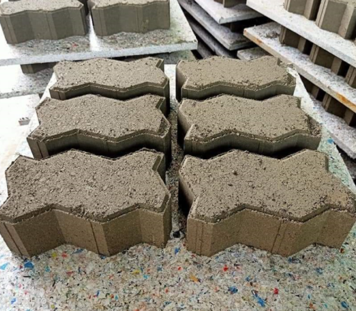
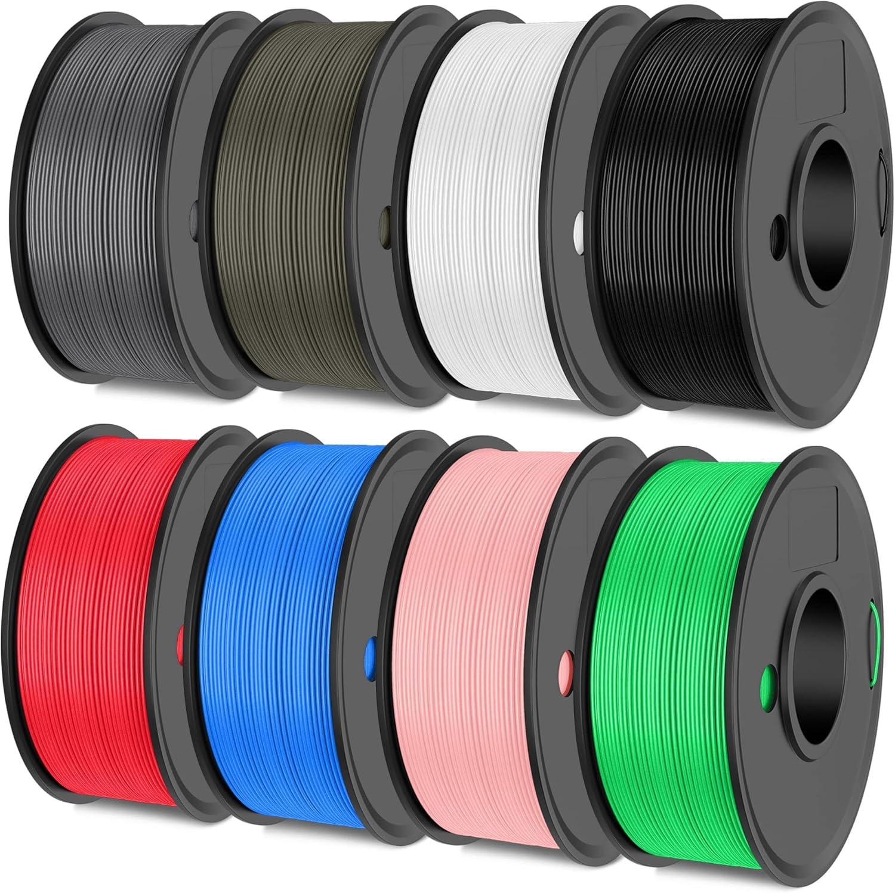
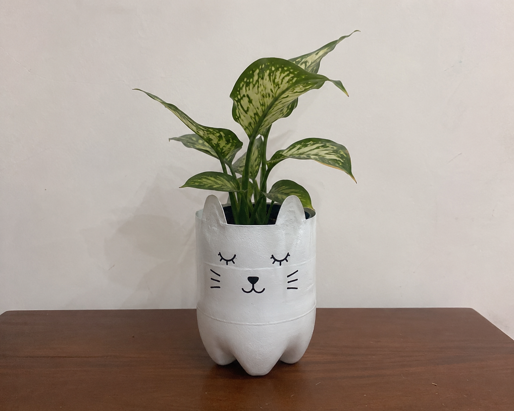
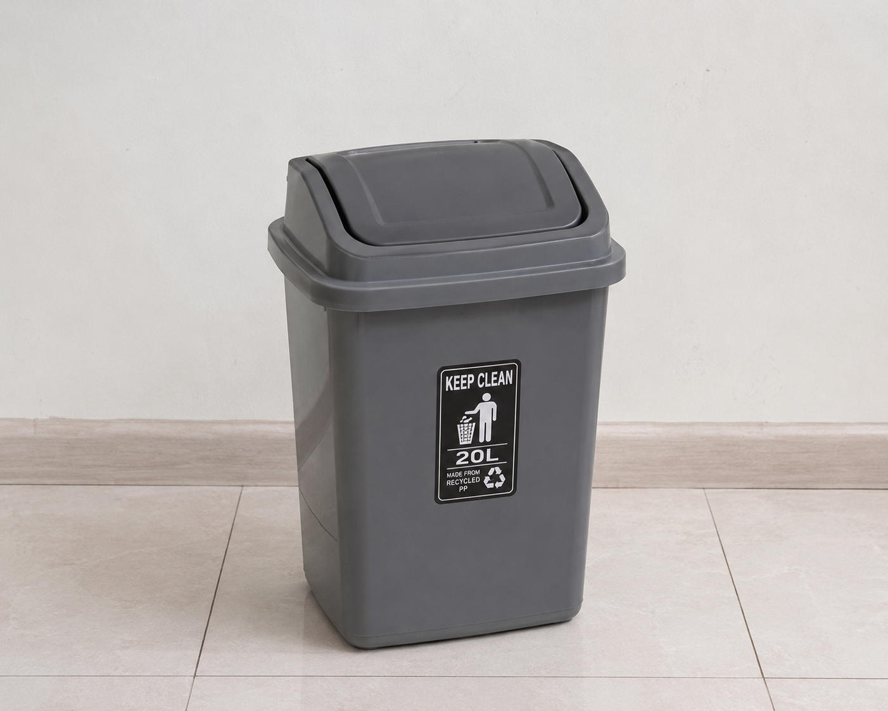
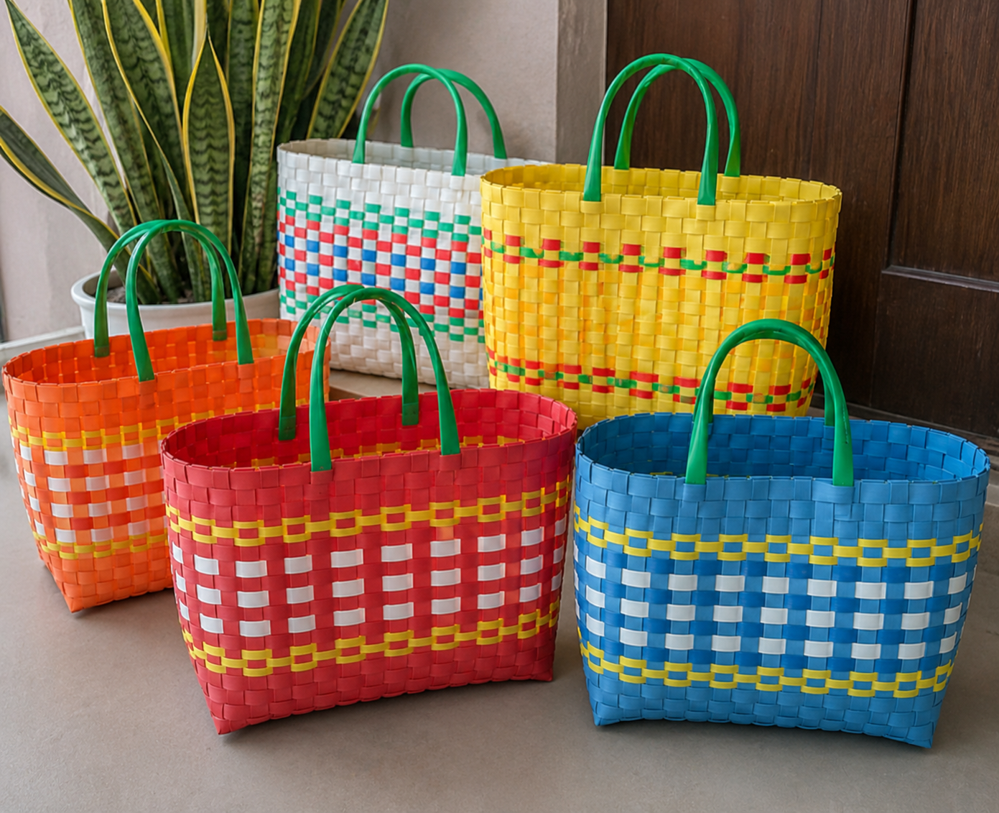
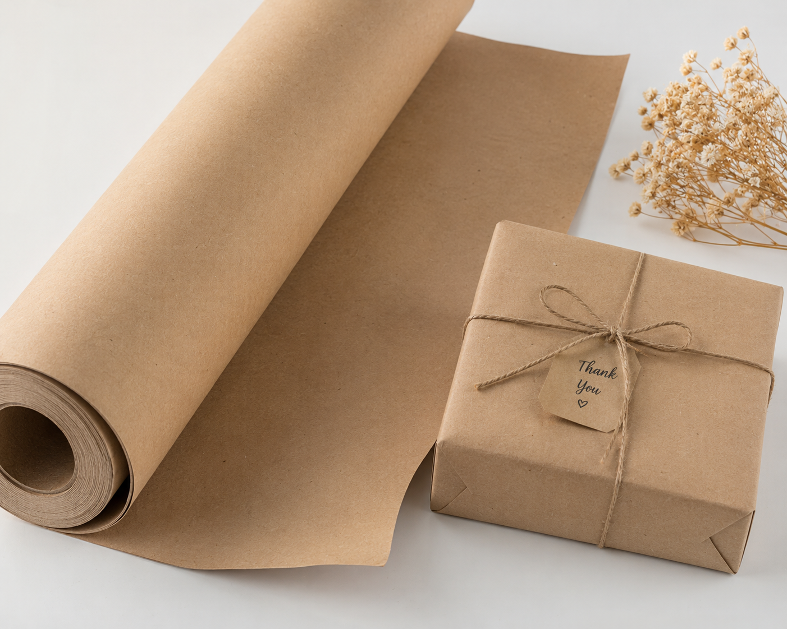
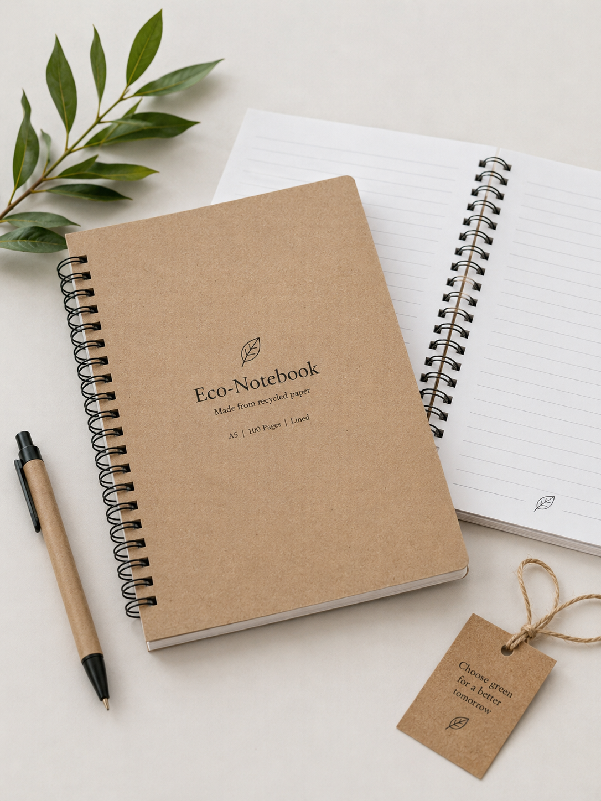
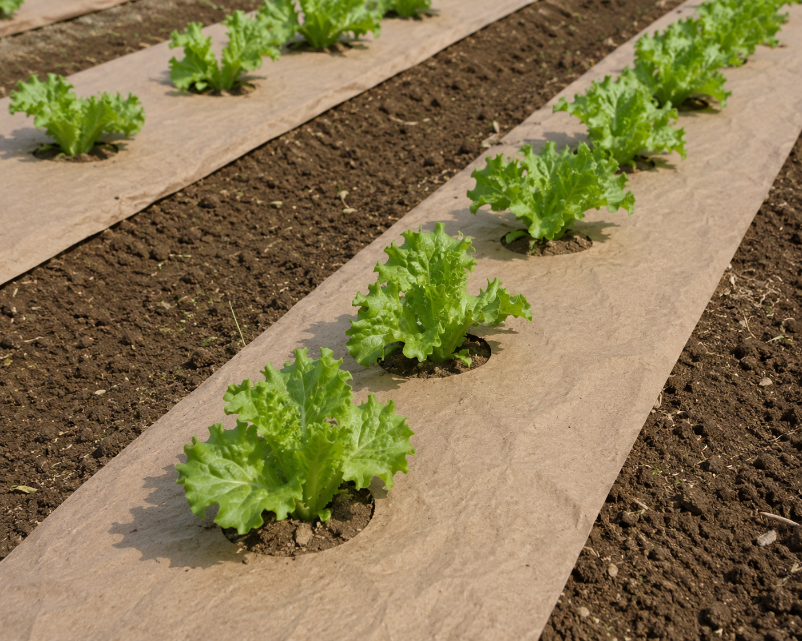

Katalog Produk Ekonomi Sirkular
Semua produk di bawah ini diproduksi langsung dari hasil daur ulang sampah yang disetorkan oleh warga. Gunakan koinmu untuk menukarkannya!

Ex-Plastik KresekPaving Block Eco-Plastic
Sangat kuat, tahan retak, dan ramah lingkungan. Dibuat dari campuran lelehan limbah plastik kresek dan pasir konstruksi.

Ex-Botol PETFilamen 3D Printing PETG
Filamen berkualitas tinggi untuk cetak 3D. Hasil ekstraksi daur ulang botol plastik bening PET 01 yang dipurifikasi.

Ex-Botol SabunPot Tanaman Estetik HDPE
Pot tanaman hias luar ruangan dengan struktur kokoh dan variasi warna unik asli dari karakter botol sabun/shampoo bekas.

Ex-Ember & TutupTempat Sampah Olahan PP
Tempat sampah pilah volume 20 Liter. Diproduksi kembali dari limbah plastik keras jenis Polypropylene (PP) yang tangguh.

Ex-Plastik CampuranKeranjang Belanja Minimalis
Solusi pengganti kantong kresek sekali pakai. Ringan, lentur, mudah dibersihkan, dan berumur pakai sangat panjang.

Ex-Kardus BekasKertas Samson Pembungkus
Kertas cokelat estetik serbaguna untuk pembungkus kado atau paket online. Hasil olahan bubur kertas kardus bekas.

Ex-Kertas HVSEco-Notebook A5
Buku catatan bergaris dengan lembaran kertas putih halus hasil pemutihan ramah lingkungan dari limbah dokumen arsip kantor.

Ex-Kertas KoranMulsa Kertas Media Tanam
Penutup tanah pertanian organik untuk menekan pertumbuhan gulma liar dan menjaga kelembapan tanah sebelum hancur terurai.